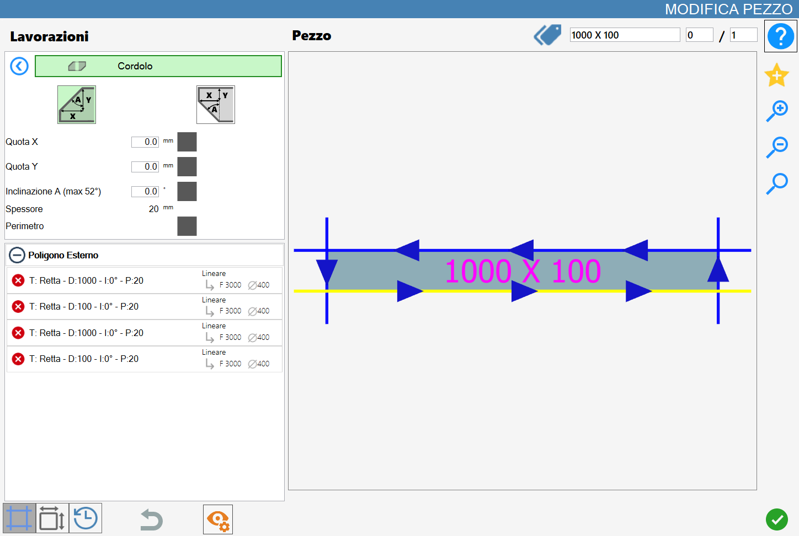
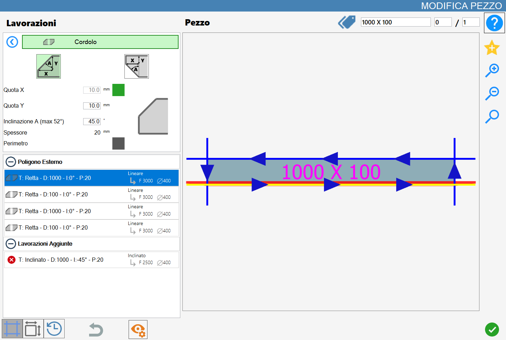
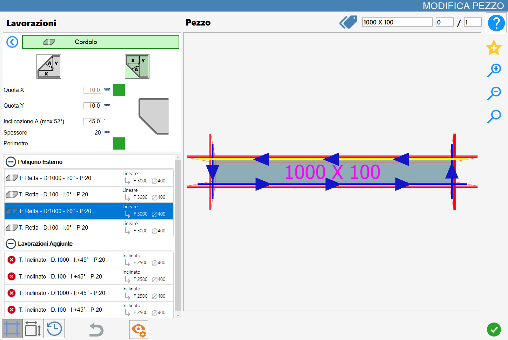

Questa funzionalità permette di aggiungere un cordolo di tipo smusso o di tipo becco (becco di civetta) sui tagli del pezzo selezionato.
L’interfaccia per questa funzione assomiglia alla seguente immagine:

Parametri
Per utilizzare questa lavorazione, occorre innanzitutto scegliere una delle due modalità disponibili, selezionando il pulsante corrispondente:
Le modalità 'Angolo Superiore' e 'Angolo Inferiore' sono mutuamente esclusive: l'attivazione di una esclude automaticamente l'altra.
 | Smusso |
 | Becco (becco di civetta) |
I seguenti parametri sono comuni ad entrambe le tipologie di lavorazione :
Quota X | Distanza lungo asse X dal bordo del pezzo. |
Quota Y | Distanza lungo asse Y dal bordo del pezzo. |
Inclinazione A | Angolo di inclinazione del taglio espresso in gradi sessagesimali. |
Spessore | Viene mostrato lo spessore della lastra attualmente impostato in Parametrix per aiutare l’utente ad applicare la lavorazione. |
Perimetro | Attivando questo parametro la lavorazione sarà eseguita su tutto il perimetro del pezzo. |
Accanto ai primi tre parametri geometrici sono presenti delle caselle di selezione quadrate, inizialmente disattivate. È necessario attivarne una per specificare quale parametro mantenere costante; in questo modo, fornendo un secondo valore, il terzo viene calcolato automaticamente. Le caselle di selezione non sono abilitabili se il valore del parametro corrispondente è pari a zero, al fine di prevenire l'impostazione di configurazioni geometricamente incoerenti o non valide.
Esecuzione della lavorazione
È possibile applicare la lavorazione premendo il pulsante a sinistra del taglio opportuno nella lista dei poligoni.
Un’icona rossa con una 'X' indica che la lavorazione non può essere applicata al taglio desiderato.
La lavorazione cordolo può essere eseguita solamente sui tagli di tipo riga.
Ad ogni cordolo inserito con successo sul materiale corrisponde l’aggiornamento dell’anteprima e l’inserimento automatico nella sezione 'Lavorazioni aggiunte' sulla sinistra.
Esecuzione Smusso
Lato
Nella seguente immagine possiamo vedere la lavorazione del cordolo applicata ad un lato del pezzo nell’angolo superiore.
Per applicare la lavorazione sul lato desiderato bisogna cliccare su di esso.

Perimetro
Nella seguente immagine possiamo vedere la lavorazione del cordolo applicata al perimetro del pezzo nell’angolo superiore.
Per applicare la lavorazione sul perimetro bisogna attivare la checkbox alla destra della scritta e successivamente cliccare su un lato del pezzo.

Esecuzione Becco
Lato
Nella seguente immagine possiamo vedere la lavorazione del cordolo applicata ad un lato del pezzo nell’angolo inferiore.
Per applicare la lavorazione sul lato desiderato bisogna cliccare su di esso.

Perimetro
Nella seguente immagine possiamo vedere la lavorazione del cordolo applicata al perimetro del pezzo nell’angolo inferiore.
Per applicare la lavorazione sul perimetro bisogna attivare la checkbox alla destra della scritta e successivamente cliccare su un lato del pezzo.
